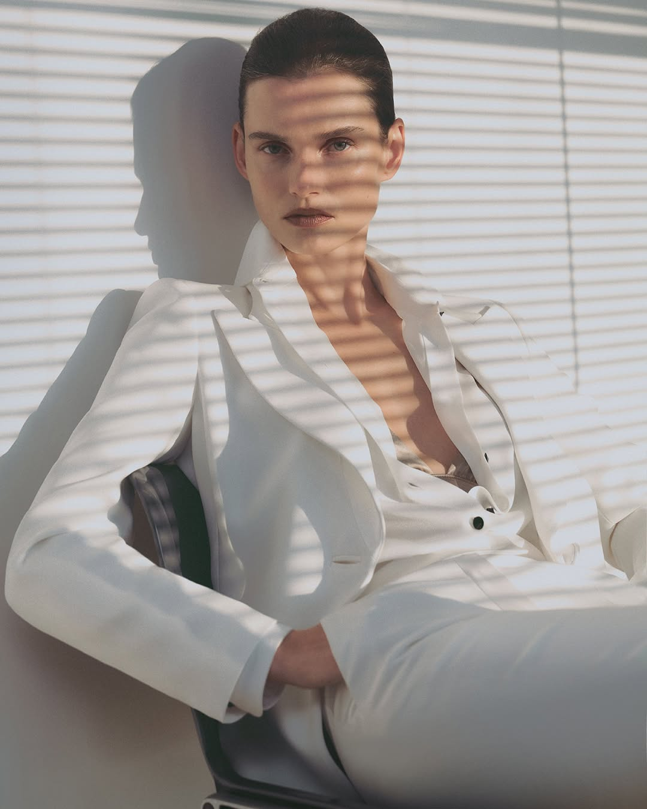
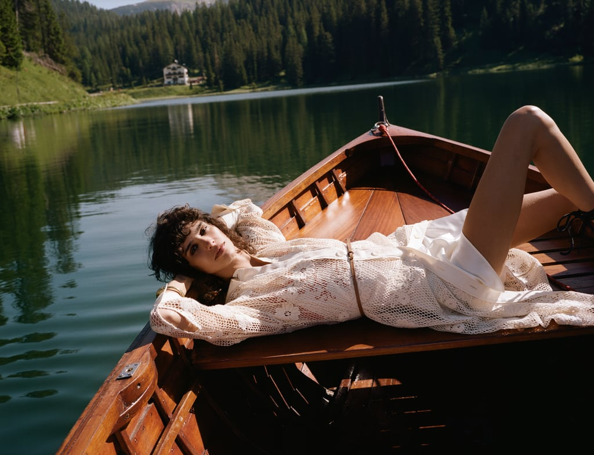

在 Soloprod 的作品中，Giorgio Armani 的人物被玻璃反射与条纹阴影包围，ZARA 的人物则站在山地木屋前，或躺在湖上的小船里。两组照片采用不同的观看距离、色彩与姿态，却出现在同一家公司的作品集中。
这家公司连接它们的方式，是摄影与影视制作。Soloprod 位于意大利米兰，官网业务面向时尚、奢侈品牌与商业广告，并在项目中分别标注品牌、摄影师或导演及拍摄地点。理解它，需要同时看两件事：画面怎样形成表达，以及一次拍摄怎样获得完成这些表达的条件。官网作品
摄影创作之外，还有哪些工作
一张广告照片涉及不同层面的决定。客户需要明确影像服务于什么传播目标；摄影师要处理取景、光线、构图与人物引导；制作工作则将人员、地点、时间和资源组织到一起。实际项目中的职责会交叉，参与者也可能承担多种角色。
美国媒体摄影师协会 ASMP 刊载的文章《Not Too Many Cooks》，进一步区分了两类制片角色：摄影师一侧的制片人帮助估算费用、组建团队和协调后勤；客户一侧的艺术制片人则侧重客户需求与内部团队沟通。这提供了一种理解商业拍摄的参照：同一个项目，需要有人持续照顾创作要求，也需要有人确认客户的要求得到落实。Kat Dalager，ASMP
Soloprod 的公司介绍与其中的组织职能相呼应。它强调当地知识、供应商关系、合作网络，以及团队和预算协调；公开职位包括执行制片人、制片人和制作协调员。仅凭这些信息，还不能确定它在每个项目中的完整职责，但可以看出其业务围绕拍摄的组织与执行展开。公司介绍
这类工作的价值，往往体现在环节之间的衔接。场地是否可用，会影响人员和器材的安排；转场需要多长时间，会影响当天可以完成多少组画面；某个时间段的光线是否合适，又会改变拍摄顺序。每一项都可能影响其他人的工作。
ASMP 的另一篇制作经验文章，特别提到提前勘景、准备备用方案、编写排期并明确团队职责。这些安排让不同工种知道何时准备、何时工作，也为现场变化留下处理空间。Chris Winton-Stahle，ASMP
专门的制片服务也需要预算与沟通投入。对于规模较小、地点固定的拍摄，摄影师与少量协作者可能已经能够完成组织；当跨地区、多人协作和转场的复杂度增加时，专门协调这些关系的价值才更明显。是否需要制作公司，应与项目规模和约束一起判断。
地点为什么是一种制作资源
Soloprod 把对拍摄地区的了解放在公司介绍的重要位置。对于外景拍摄，“知道一个漂亮地方”只是起点；还需要知道它在某个时间怎样受光，团队如何抵达，现场有没有足够的工作空间，以及计划改变后有哪些选择。
摄影师 Flor Blake 在 ASMP 的外景经验文章中，把观察现有光线、了解场地条件、安排造型与服装列为相互关联的准备工作。一个地点在照片里是否合适，与它在现场是否可用，是需要同时解决的问题。Flor Blake，ASMP Colorado
可以设想这样一个场景：一处山景符合创作方向，但进出耗时较长。如果团队当天还要转场，留给人物、服装与光线调整的时间就会减少。选择更易抵达的地点，可能增加拍摄余量，却也可能改变原来想要的景观。这是制作中的一般性取舍，并非对下文 ZARA 项目现场的还原。
因此，当地资源的价值包括对场地与供应商的熟悉，也包括判断某个方案是否可执行。它把“想拍成什么”与“在这些条件下能完成什么”连接起来。
Armani：反射与阴影怎样塑造人物
Soloprod 将这组作品列为 Giorgio Armani Made to Measure，摄影师为 Giulio Rustichelli，地点为米兰。以下从其中两幅照片观察其视觉关系。

Giorgio Armani Made to Measure，官网第 1 张。摄影：Giulio Rustichelli。图片来源：Soloprod 项目页。
第一张照片的主体很明确：人物看向镜头，白色服装占据大面积画面，一只手停在腰部，肩线与手臂形成稳定轮廓。与此同时，蓝青与淡橙色的反射跨过脸部和身体，竖向色带打断了原本连贯的形状。
这层遮挡改变了观看关系。视线先寻找眼睛和面部，再意识到人物与镜头之间存在叠加的表面。白色服装为这种色彩变化提供了较干净的承载面：轮廓仍然清楚，局部却随着反射显出冷暖差异。
人物的直接注视带来接近感，遮挡又保留距离。两者同时存在，使照片呈现出克制、精致而略有疏离的气质。这里的判断来自画面关系，不是对摄影师个人动机的转述。

同组官网第 3 张。摄影：Giulio Rustichelli。图片来源：Soloprod 项目页。
另一张照片中，人物以坐姿出现，背景和服装都接近浅色。横向条纹阴影同时落在脸、衣领、手臂与背景上，把原本可能连成一片的白色分出层次。
衣领打开的斜线、弯曲的手臂与条纹的重复方向互相交错。服装轮廓提供较大的形状，阴影则在表面加入细密节奏；人物头部在背景上的投影，又让身体与空间的距离变得可见。
两张照片采用了不同的处理，却都让某种遮挡或明暗结构经过人物。气质上的连续性由此建立：简洁服装、较少的背景信息、明确的身体轮廓，再加上明显的遮挡与明暗变化。照片里具体的反射与条纹究竟怎样制作，仍需现场资料才能确认。
这样的画面也有取舍。反射会改变衣服在图中的颜色，阴影会遮住部分表面细节；如果观看任务是准确辨认原色与面料，它们会增加干扰。但从这两幅图看，服装与人物、光影之间的关系获得了更多表现空间。
ZARA：服装怎样进入一段山地生活
Zara Dolomites 项目由 Angelo Pennetta 摄影，官网标注地点为 Dolomiti，即多洛米蒂地区。与前一组较集中的人物画面相比，这里的环境信息明显增多。

Zara Dolomites，官网第 1 张。摄影：Angelo Pennetta。图片来源：Soloprod 项目页。
第一张照片保留人物全身，也保留从近到远的景物：脚下与身后是堆放的原木，稍远处有木屋，最后展开为树林和山峰。人物因此有了具体的站立位置，服装也与周围的材质发生联系。
原木表面粗糙、颜色偏暖，树林形成较深的绿色背景；浅色服装与橙、蓝菱格纹从中显现出来。这里既有颜色反差，也有表面质感的对照。背景的信息较多，人物居中的位置、完整的身体轮廓与较亮的服装仍然帮助视线找到主体。
人物正面朝向镜头，包、饰品与靴子都清楚可见，服装展示保持着完整性。木屋、原木和山峰则带来出游与户外生活的联想。这种联想属于本文对画面的解读，不能据此概括 ZARA 整个品牌的固定定位。

同组官网第 2 张。摄影：Angelo Pennetta。图片来源：Soloprod 项目页。
第二张照片把人物放到木船里。船身的斜线从近处引向画面上方，人物横卧的身体沿着船展开，一条弯曲的腿又带来方向变化。背景中的湖面、树林与岸边建筑，继续保留了旅行环境。
浅色镂空针织与木船、深绿湖水形成对照。阳光让织物的孔隙和身体的明暗更容易看见，人物舒展的姿态则改变了衣服的观看方式：观者看到服装怎样随着身体躺下、弯曲和铺开。
把两张图放在一起，第一张承担了较完整的全身展示，第二张增加了姿态和生活情境。它们让同一个地区容纳不同距离与动作，组照因而有了变化，也保留共同的自然环境。
这里的“松弛”有具体来源：身体舒展、空间开阔、服装与出游情境相连。成片中轻松的状态，并不能用来判断现场组织是否简单。对于一般外景制作，越是需要在不同位置维持这种连续体验，越要考虑转场、光线和团队配合。
制作公司的作品集，能够说明到哪一步
Armani 与 ZARA 的摄影师不同，画面语言也不同。两组项目同时出现在 Soloprod 官网，首先说明的是它参与了这些制作项目。作品署名帮助我们把摄影创作与制作参与分别识别出来。
这也使制作公司的作品集拥有不同于个人摄影作品集的阅读方式。除了画面是否吸引人，还可以看项目涉及哪些地点、与哪些创作者合作，以及公司明确说明了哪些服务。跨项目的差异，可以呈现它所面对的制作需求范围。
不过，漂亮的成片不能独立证明某家公司主导了全部创意，也不能直接证明它节约了多少费用、提高了多少效率。这些判断需要具体的职责和交付证据。官网作品适合让我们认识其项目经历和视觉结果，公司介绍则提供理解其服务定位的入口。
Soloprod 强调的当地知识、供应商和合作网络，可以理解为这类服务的基础。对客户与创作者而言，关键在于它们能否在特定项目中配合起来：合适的人、地点和资源，是否能够在约定的时间与预算内支持创作。
资料查阅于 2026 年 10 月 25 日。公司与项目事实依据官网；行业分工参考 ASMP 所刊作者经验，不代表 Soloprod 每个项目的实际合同或幕后流程。画面效果与气质分析为本文解读。
留言
由 Disqus 提供。